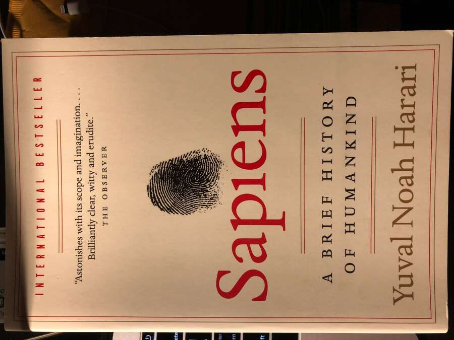

美国大城市的死与生

美国大城市的死与生
C912.81/12
以普通人的视角重新审视城市规划，质疑现代主义规划的得与失。
本系统为读者提供图书检索、借阅与归还等一站式服务，倡导阅读，共建书香社会。
本图书管理系统致力于为读者提供便捷的借阅与查询服务。馆藏涵盖文学、科技、教育、艺术等多类图书，支持在线检索与预约，欢迎广大读者使用。
C912.81/12
以普通人的视角重新审视城市规划，质疑现代主义规划的得与失。

F291.1/35
从经济学角度解读城市为何是人类最伟大的发明。

TU-856/8
从建筑与街道的尺度关系，探索城市空间的审美与人文关怀。

I565.88/23
一则关于爱与责任的寓言，写给每一个曾经是孩子的大人。

I712.88/17
蜘蛛夏洛与小猪威尔伯的友谊，温暖了几代读者的童年经典。

I287.45/66
油麻地小学的少年时光，诗意中见成长的中国儿童文学的标杆之作。

TP18/54
AI 领域最经典的教材，系统梳理智能体视角的全面入门。
TP181/128
中文机器学习入门首选，"西瓜书"陪伴无数人敲开 AI 的大门。

TP183/89
深度学习"圣经"，由三位领域奠基人联手撰写。

K02/32
十万年人类史诗，重新审视我们是谁、从哪里来、到哪里去。

I247.57/321
在苦难中读出生命的重量，一部让人肃然起敬的生存之歌。

TB47/156
在日常中发现设计的本质，重新审视生活中的美学思考。